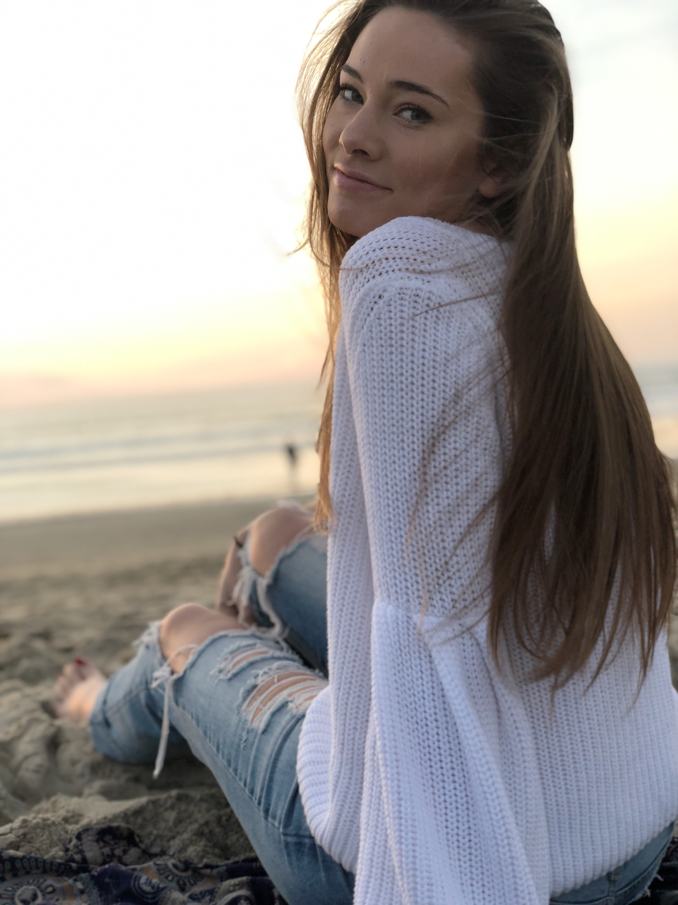

Evan J. Barosay
Lets Connect!
Hello!
My name is Evan Barosay, welcome to my portfolio!
I recently graduated from the University of California, San Diego and am looking to
further my passion for design with a UI/UX role. I'm interested in designing technologies
that give back to the community, and
look forward to a future career that will allow me to do so.
My Path
Design wasn’t always my pursued path. I originally entered UCSD as a Human Biology major,
on the pre-med track. After determining that route wasn't something I was excited about,
I took a quarter to explore different majors and luckily stumbled into Don Norman's
'Intro to Human-Centered Design' course, and immediately knew I was drawn to the field of design.
Since then, design classes have become a true enjoyment and have prompted me to pursue
further design experience as Research Assistant in UCSD’s Design Lab and the UCSD
Cognitive Science Department. Through this, I have gained insight in the field of
human-centered design and have also gained skills involving human-behavior
& decision making, prototyping & iterating, user-research & evidence-based design,
and (perhaps the most important) team-working & team-building. I have far more to
learn in this field and am eager to do so. I am excited for the future, whatever and wherever that might be.
My Approach
In my opinion, design is not just a way to make things look nice.
Good design means user friendly, making information more accessible, and having an overall
good user experience. From my HCI courses and Research Assistant experience, I have become a strong follower in
research-driven design. I believe user-research can accommodate different narratives, while also
complementing overall human-centered design. This has become one of the most fundamental parts in my design process.
I like to follow an approach of observational-research, ideation, multi-leveled prototyping,
and iteration. I believe good design starts with research to find the root problem(s),
and is driven by 1) unconventional solutions and 2) making a point to always keeping the intended user in mind.
What Else?
Design is a joy of mine, but that’s not all I do! In my spare time,
you can find me taking indoor cycling classes (I'm obsessed) or scoping out a sweet treat. Life's all about
balance, right? I also look forward to completing my 'New Years Resolution' this year of running my first
half-marathon!